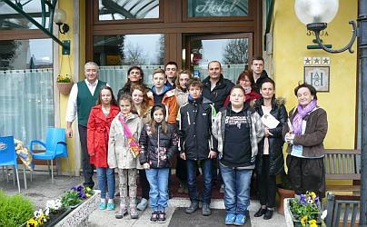
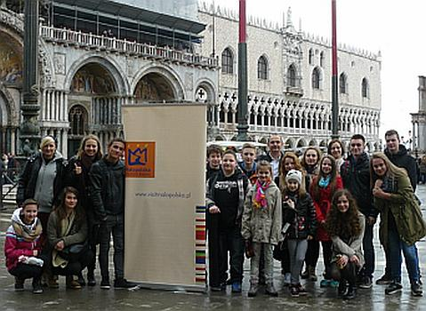
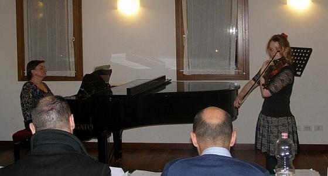
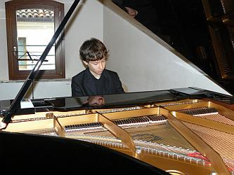
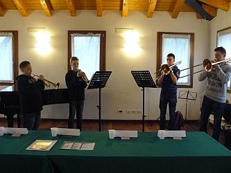
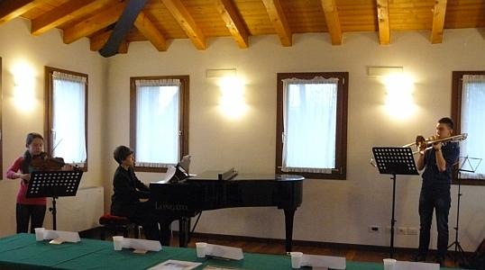
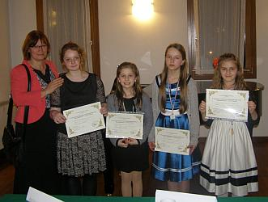
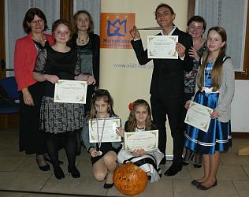
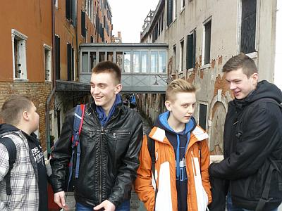
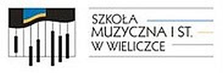

A tymczasem w Cameracie...
.
2014-03-25
Szanowni Państwo,Miło mi poinformować o sukcesach naszych uczniów we Włoszech. Są naprawdę imponujące.
 
Pierwszy dzień kalendarzowej wiosny 9 uczniów Szkoły Muzycznej I stopnia w Wieliczce oraz przedstawiciel zaprzyjaźnionej Szkoły Muzycznej II stopnia im. B. Rutkowskiego w Krakowie, wraz z opiekunami, postanowili uczcić w sposób nietuzinkowy i niezapomniany. Grupa wyjechała do skąpanej w słońcu Italii na VI Międzynarodowy Konkurs "Giovani Musicisti - Citta di Treviso", miasteczka leżącego zaledwie 30 km od Wenecji. Jest to niezwykle prestiżowy konkurs, który wszedł już na stałe w kalendarz imprez muzycznego świata. Przyjeżdżają tutaj młodzi instrumentaliści z najdalszych zakątków Europy i Azji, reprezentując swoje szkoły muzyczne I i II stopnia oraz uczelnie muzyczne. Konkurs odbywa się w trzech turach i trwa od 22 marca do 11 maja, w którym to dniu muzyczne zmagania uczestników wieńczy Koncert Laureatów w przepięknej sali Opera di Comunale. Są to soliści - pianiści oraz inni instrumentaliści, wokaliści, duety fortepianowe, zespoły kameralne, orkiestry i chóry. Osobno oceniani są wykonawcy muzyki współczesnej. Wszyscy przydzieleni do 11 kategorii, występują w 7 grupach wiekowych. Łącznie 348 adeptów sztuki muzycznej z 23 krajów.
   
Do szlachetnej walki o laur zwycięstwa stanęli: Piotr Lara z klasy fortepianu Marii Wosiek, Gabriela Baltaza, Natalia Górecka oraz Alicja Pustuła z klasy skrzypiec Bogusławy Ziegelheim, Laura Kościelska z klasy skrzypiec Marii Sobeńko oraz dwa zespoły kameralne:
Kwartet blaszany dęty w składzie - Dominik Cichy, Jakub Konarski (klasa trąbki Pawła Gajewskiego), Mateusz Gawor, Krzysztof Lachman (klasa puzonu Arkadiusza Bały), a także Trio "Con Passione" w składzie - Alicja Pustuła (klasa skrzypiec Bogusławy Ziegelheim), Krzysztof Lachman (klasa puzonu Arkadiusza Bały) i Piotr Lara (klasa fortepianu Marii Wosiek).
Szkołę Muzyczną II stopnia w Krakowie reprezentował Patryk Bała z klasy gitary Adama Makowskiego, który jet mieszkańcem gminy Wieliczka.
Piotr Lara, który z powodów organizacyjnych nie mógł występować w swojej grupie wiekowej, w błyskotliwym stylu pokonał starszych od siebie konkurentów, uczniów szkół muzycznych II stopnia, zajmując I miejsce z punktacją 95/100 i zdobywając złoty medal.
Alicja Pustuła zdobyła również złoty medal i zajęła I miejsce, uzyskując 97/100 punktów w swojej grupie wiekowej.
Gabrysia Baltaza i Laura Kościelska zajęły ex equo III miejsce z punktacją 89/100 i nagrodzone zostały brązowym medalem.
W kategorii zespołów kameralnych zaszczytne I miejsce i również złoty medal otrzymało Trio "Con Passione" z punktacją 95/100.
Patryk Bała znalazł się w doborowym gronie laureatów konkursu, zdobywając w doskonałym stylu złoty medal i I miejsce z punktacją 98/100.
 
Uczniowie znakomicie wypadli na tle konkurencji z innych krajów prezentując bardzo wysoki poziom gry. Swoimi wykonaniami wzbudzili zachwyt wśród jurorów, dając świadectwo wysokiego poziomu kształcenia muzycznego w Polsce. Opiekunowie grupy: Arkadiusz Bała - kierownik wycieczki, Izabela Seweryn - niezrównany tłumacz języka włoskiego i akompaniator, Bogusława Ziegelheim, Agnieszka Korczyńska - akompaniator oraz Małgorzata Bała i Agnieszka Kościelska - przedstawicielki rodziców obu szkół muzycznych, dbali o sprawną organizację wyjazdu i dobrą atmosferę. Uczestnicy wycieczki (uczniowie i nauczyciele) uczestnicząc w przesłuchaniach otwartych dla publiczności mieli okazję do konfrontacji poziomu muzycznego wielu krajów, wymiany doświadczeń oraz nawiązania międzynarodowych przyjaźni. Zaprosili skrzypków do odwiedzenia Małopolski podczas mającej się odbyć w 2015 roku kolejnej V edycji Międzynarodowego Konkursu Skrzypcowego "Vivaldi 337", organizowanego przez wielicką Szkołę Muzyczną. Pomimo bardzo napiętego programu konkursu udało się zorganizować krótką wycieczkę do Wenecji. Uczniowe płynęli tramwajem wodnym, zwiedzili bazylikę św. Marka, spacerowali uliczkami sąsiadującymi z Placem św. Marka.

Gospodarze przyjęli nas z wielką gościnnością.
Uczestnicy wyprawy do Włoch są zachwyceni wyjazdem, który odbył się dzięki wsparciu finansowemu:Gminy Wieliczka Urzędu Marszałkowskiego Województwa Małopolskiego Gminy Biskupice oraz pomocy organizacyjnej Stowarzyszenia Muzycznego - Chór Camerata w Wieliczce Niezrównani okazali się również kierowcy, towarzyszący grupie przez cały czas trwania wycieczki. Nie tylko bepiecznie i w miłej atmosferze pokonali trasę Wieliczka - Treviso - Wieliczka, ale służyli nam wielokrotnie podczas nerwowych dni przesłuchań konkursowych, przewożąc nas z hotelu do Studio di Musica. Jedynie pogoda niemile nas zaskoczyła - oczekiwana słoneczna Italia okazała się w pierwszych dniach wiosny krainą deszczową i chłodną. Mamy nadzieję powrócić jeszcze do Treviso...
Z poważaniem,
Izabela Szota
Dyrektor
Szkoła Muzyczna I stopnia w Wieliczce


© Stowarzyszenie Muzyczne Chór Camerata Wieliczka
Projekt i wykonanie:  Prowadzenie strony: Małgorzata Wysocka-Cebula
Prowadzenie strony: Małgorzata Wysocka-Cebula